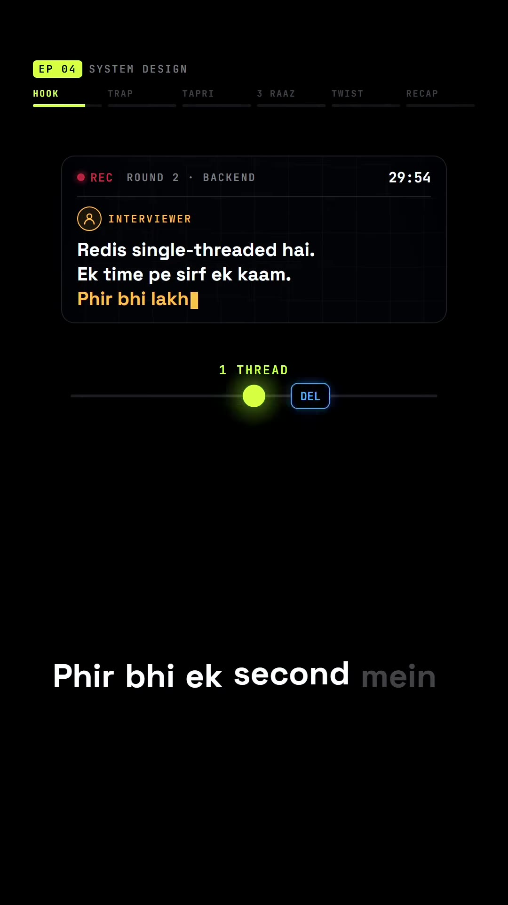
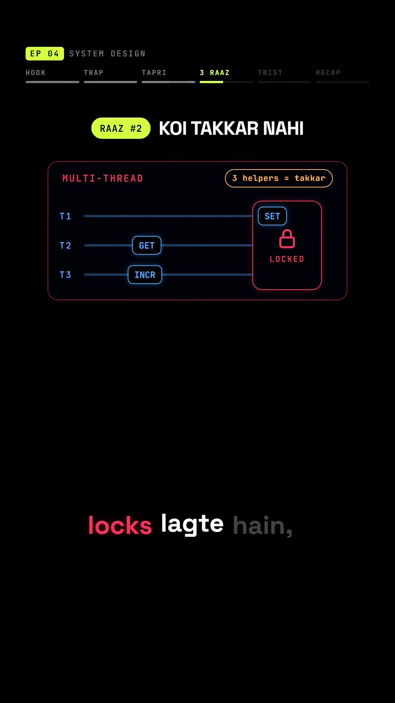
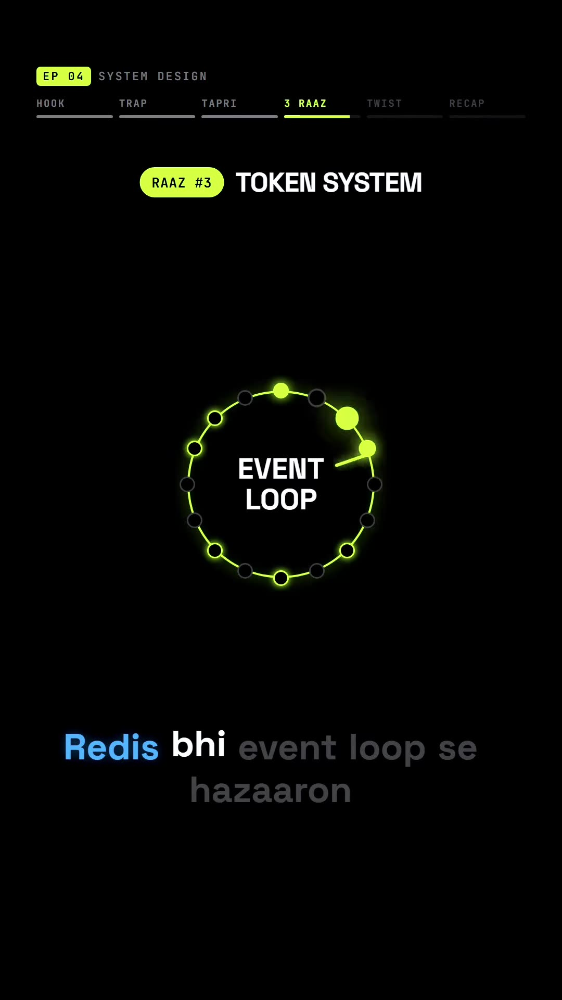
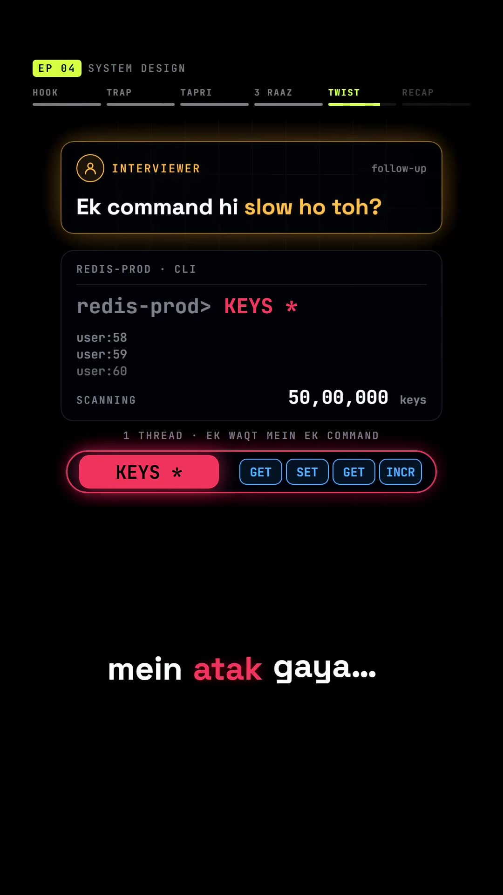

Executive Summary
In backend engineering interviews, a classic puzzle is posed: "Redis processes commands using a single main execution thread. Yet a single Redis instance can easily process 100,000 to 500,000 requests per second. How can a single thread outperform multi-threaded database engines?"
Candidates often incorrectly guess that Redis secretly runs worker threads under the hood or relies on exotic hardware acceleration. As InterviewTrap explains through the vivid Chai Tapri (Tea Stall) Analogy, Redis's extreme throughput stems from three architectural pillars: pure in-memory execution, non-blocking I/O multiplexing, and the total elimination of lock contention and context switching overhead.
Core Visual Demonstrations




The Chai Tapri Analogy: The 3 Secrets of Speed
1. Everything in Arm's Reach (Pure In-Memory Execution)
"A busy street tea vendor keeps milk, sugar, tea leaves, and spices within arm's reach on the counter. They never walk back to a distant warehouse to fetch ingredients for individual cups."
Traditional relational databases (PostgreSQL, MySQL) must interact with disk controllers, write-ahead logs (WAL), and buffer pools. Accessing high-speed NVMe flash memory takes ~10,000 to 100,000 nanoseconds. Accessing DDR5 RAM takes only ~50 to 100 nanoseconds. By residing entirely in RAM, Redis commands execute in a fraction of a microsecond.
2. One Master Cook, Zero Collisions (No Locks, No Context Switches)
In multi-threaded architectures, when multiple worker threads attempt to modify shared state (e.g. incrementing a counter or updating a hash table):
- Threads must acquire mutex locks or semaphores, forcing other threads to sleep and wait.
- The operating system kernel spends massive CPU cycles performing context switching (saving registers, flushing CPU caches, switching thread memory stacks).
Redis eliminates this entirely. With a single thread, every command is atomic by definition. There are no mutexes, no lock contention, and zero CPU context switching overhead.
3. The Token System (Non-Blocking I/O Multiplexing)
If the tea vendor had to stand at the counter waiting while a customer counted loose change from their pockets, the entire line would halt. Instead, the vendor serves whoever has their money ready.
Redis uses the operating system's kernel notification system—epoll on Linux, kqueue on BSD/macOS. A single thread monitors tens of thousands of connected client sockets simultaneously. When a client socket completes transmitting its network bytes, the kernel notifies Redis, which reads the payload, executes the command in microseconds, writes the response, and moves to the next ready socket.
The Fatal Interview Trap: The KEYS * Catastrophe
Because Redis is single-threaded, its greatest strength is also its greatest vulnerability:
If a single command takes 5 seconds to complete, every other client on the entire server is blocked and frozen for 5 seconds.
In production, a junior developer might run KEYS user:* to find keys matching a pattern. In an instance with 10 million keys, KEYS is an $O(N)$ synchronous scan. It freezes the event loop, causing health checks to fail, web apps to drop connections, and Kubernetes to kill the pod.
The Production Fix: Always ban KEYS *. Use cursor-based, incremental iteration:
# WRONG (Blocks entire Redis server)
KEYS user:*
# CORRECT (Non-blocking, batched cursor iteration)
SCAN 0 MATCH user:* COUNT 100